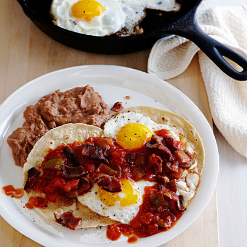

Huevos Rancheros

Description
Huevos Rancheros is a beloved, time-honored culinary masterpiece hailing from the vibrant cuisine of northern Mexico. This iconic dish boasts a harmonious blend of elements, showcasing perfectly cooked eggs nestled atop a bed of flavorful beans and tender potatoes. The crowning glory is a rich and fiery tomato-based sauce, skillfully crafted to tantalize the taste buds with its bold flavors. Served alongside your choice of either soft, pillowy flour tortillas or hearty corn tortillas, this gastronomic delight is a symphony of textures and tastes that celebrates the essence of Mexican cuisine.
Ingredients
- 2 eggs
- 1/4 cup butter
- 1 large potato
- 1/2 cup beans
- 2 tortillas (flour or corn)
- 1/2 tomato
- 1-2 serrano peppers
- bacon (optional)
- salt and pepper to taste
Steps
- Heat up 2 pans to medium heat
- Dice potatoes and cook in 1/8 cup butter
- Cook bacon in second pan
- Dice tomatoes and serranos
- Remove bacon, add diced tomatoes and serranos
- When sauce is cooked set aside and season
- Cook beans in same pan
- Once potatoes cook, move aside and cook eggs (use remaining butter)
- Heat tortillas
- On a plate, add all items separately
- Add sauce on top of eggs